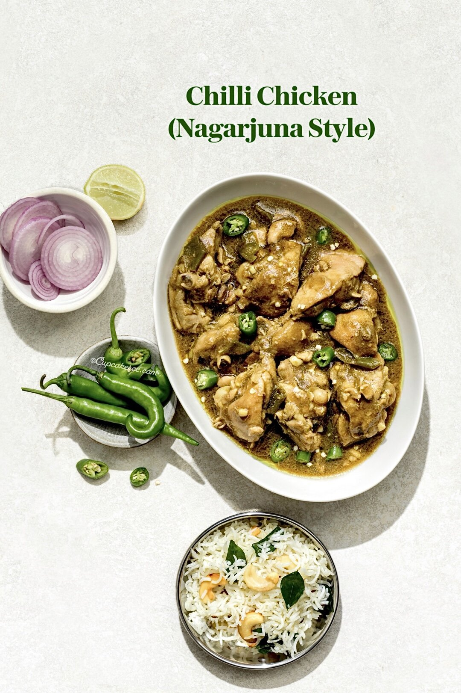

Nagarjuna Style Chilli Chicken

Description
This is not a prettiest chicken curry you will lay your eyes on. But what it lacks in looks, it makes up for in flavor.
Nagarjuna Style Chilli Chicken is a salty, umami curry with a searing heat that is off the charts 🥵.
Named after the popular local eatery that made it famous, it is not a dish for the faint-hearted.
The over-zealous of use green chillies renders a gravy so sharply moreish,
it'll make you wince (though in a good way, if you know what I mean).
The recipe is straightforward and does not require lot of ingredients.
Pair it with some ghee rice or biryani for an easy, satisfying and sweat-inducing meal.
And have a glass (or two) of ice water handy!
Ingredients
- 1 kg bone-in, skinless chicken thighs, each cut in half
- 1 tbsp ginger-garlic paste
- 1 tbsp green chilli paste (made by pulsing fresh green chillies in a blender until coarsely ground)
- 1/4 tsp ground turmeric
- 2 tbsp white vinegar, divided
- 2 tbsp ghee
- 2 tsp finely chopped garlic
- 5-6 fresh green chillies, sliced into 1” pieces
- 1 1/2 tbsp dark soy sauce
- 2 1/4 cups water, divided
- 1 1/2 tbsp cornflour
- 1 tsp sugar (optional)
- Salt to taste
Steps
- Wash the chicken and pat it dry with some paper towels.
- Transfer it to a mixing bowl along with the ginger-garlic paste, green chilli paste, turmeric powder, 1 tsp salt and 1 tbsp vinegar.
- Mix well, cover and marinate for 30 minutes.
- Combine the cornflour with 1/4 cup of water. Mix well and set aside.
- In a heavy-based pan or Dutch oven, melt the ghee over medium heat. Add 2 tsp chopped garlic and the chopped green chillies. Saute until the garlic starts to brown.
- Add the marinated chicken and sauté, stirring frequently for 6-8 minutes or until the raw smell of the ginger-garlic disappears.
- Add the soya sauce and remaining tablespoon of vinegar. Sauté for a 3-4 minutes. Add 2 cups of water and salt to taste.
- Bring to a boil. Once the curry reaches a rolling boil, reduce the heat to medium-low. Cover and cook for 18-20 minutes or until the chicken is done.
- Remove the lid. Stir the cornflour slurry well and add it to the chicken along with the sugar. Turn up the heat and let the gravy thicken for 5 minutes.
- Taste and add more salt and/or vinegar, if needed. Turn off the heat and transfer the chicken to a serving bowl.
- Serve the chilli chicken with biryani